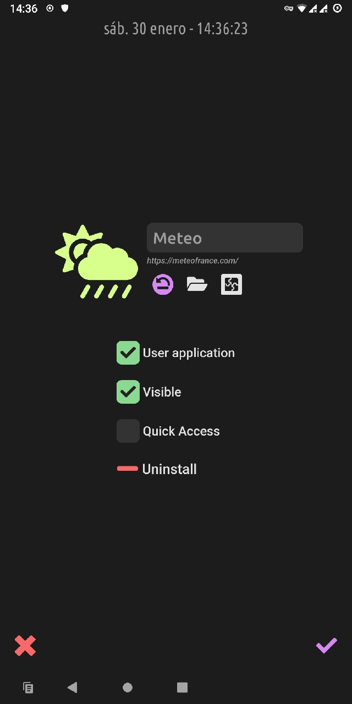

Application settings
Long-press any application icon to open its settings.


Reset the default icon
Select a custom icon file (.jpg,.pngor.svg)
Select an icon from the provided icon set- You can change the application label with the top field. Leave it empty to reset to the original/official name.
- RxLauncher automatically detects which applications are system or user applications, and use this information to filter them in the application list. You can change this if RxLauncher is wrong.
- You can easily hide an application from the list. Get to the RxLauncher settings to show again hidden applications if you need.
- Select quick access to permanently show the application in the right bar.
- Uninstall will uninstall the application from the system. Note that some system apps can not be removed without rooting the phone.
Note
URLs / Web applications you may have added have the exact same settings and work in RxLauncher the same way as any application.
